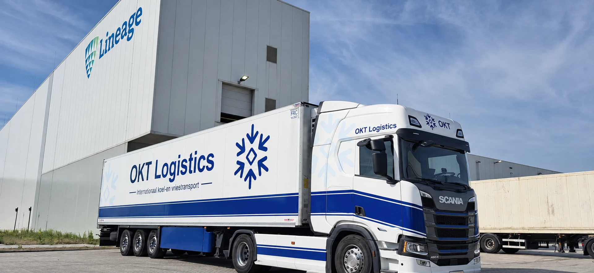

01
Koeltransport
Voor verse en gekoelde producten die tijdens de rit binnen de afgesproken temperatuur moeten blijven.
Meer over koeltransport →OKT Logistics verzorgt temperatuurgecontroleerd transport voor gekoelde en diepgevroren producten. Met direct contact, FTL en groupage en focus op Nederland, Duitsland, België en Frankrijk.
-20 °C is een voorbeeldinstelling voor een diepvrieszending. De werkelijke temperatuur spreken we vooraf af op basis van de productspecificatie.
Van gekoelde levensmiddelen tot diepvriesproducten: kies de dienst die past bij uw lading, gewenste temperatuur en route.
Voor verse en gekoelde producten die tijdens de rit binnen de afgesproken temperatuur moeten blijven.
Meer over koeltransport →Voor diepvriesproducten waarbij temperatuurbeheersing en strakke planning essentieel zijn.
Meer over vriestransport →Flexibele oplossingen voor goederen die gecontroleerd binnen een specifieke temperatuurband vervoerd moeten worden.
Meer over geconditioneerd transport →
Bij geconditioneerd transport draait het om meer dan alleen van A naar B rijden. Planning, communicatie en temperatuurbeheersing moeten op elkaar aansluiten.
Laadadres, losadres, datum, temperatuur en hoeveelheid worden doorgegeven.
Wij koppelen de juiste combinatie en stemmen laad- en lostijden af.
De lading wordt onder de afgesproken temperatuur vervoerd naar de bestemming.
Na lossing worden transportdocumenten en eventuele bijzonderheden afgehandeld.
Van losse rit tot terugkerende transportstroom: duidelijke afspraken, direct contact en gecontroleerd vervoer voor food en andere temperatuurgevoelige goederen.
OKT Logistics verzorgt internationaal koel- en vriestransport richting Duitsland, België en Frankrijk.
Koel- en vriestransport tussen Nederland en Duitse laad- en loslocaties.
Bekijk Duitsland →Temperatuurgecontroleerd transport binnen de Benelux en richting Belgische distributiecentra.
Bekijk België →Internationaal transport naar Franse bestemmingen voor gekoelde en diepgevroren goederen.
Bekijk Frankrijk →Binnenlandse aansluiting op internationale transportstromen en vaste logistieke trajecten.
Vraag prijs aan →Producttemperatuur, laad- en losinstructies en gewenste documentatie stemmen we vooraf af. Heeft uw opdrachtgever aanvullende kwaliteitseisen? Geef die direct bij de aanvraag door.
Een aantal pallets gekoelde goederen naar België? Geef palletmaten, gewicht en tijdvensters door. We beoordelen of combineren past.
Een volledige lading diepvriesproducten? Deel productspecificatie, temperatuur en de laad- en losafspraken voor een concrete beoordeling.
Een Franse ontvanger met een vast losvenster? Vermeld de locatie, contactpersoon en referenties bij de aanvraag.
Koeltransport houdt goederen tijdens het vervoer binnen een afgesproken temperatuurconditie. Welke conditie nodig is, volgt uit het product en de opdracht.
Lees artikel →De transporttemperatuur wordt afgesproken op basis van productspecificatie en opdracht. Een voorbeeld als -20 °C is geen algemene instelling voor alle goederen.
Lees artikel →Een complete aanvraag voorkomt extra vragen. Begin met route en datum, voeg daarna product, temperatuur en hoeveelheid toe.
Lees artikel →Stuur laadadres, losadres, datum, temperatuur, aantal pallets en gewicht. Zo kan OKT snel beoordelen welke transportoplossing past.
Offerteaanvragen gaan naar operations@okttrans.nl.
Voor transportaanvragen kun je rechtstreeks contact opnemen met operations.